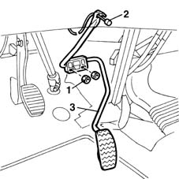
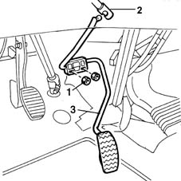

1068A14 accelerator pedal - r + r
- Path
- Procedures > 10 ENGINE UNIT > 1068 ACCELERATOR CONTROLS > 1068A accelerator pedal control > 1068A14 accelerator pedal - r + r
- Kind
- repair procedure (removal / refitting; the operation number is the code)
- Applies to
- all engines; all production periods
- Interactive page
- https://sloeber94.github.io/elrnDB-fMltpl/en/#/2891275
Applies to: engines: 1.6 16v; all production periods
 Removing
Removing
 Refitting
RefittingOpen the driver's door.
1. Undo the nuts securing the pedal to the body.
2. Disconnect the accelerator cable from its seat on the pedal.
3. Remove the accelerator pedal.

Applies to: engines: 1.6 16v; all production periods
Refitting
RemovingFit the pedal and attach the accelerator cable.
Tighten the nuts securing the pedal to the body.
1068A10 accelerator pedal control - check, adjust if necessary and lubricate
Close the door.
Applies to: engines: 1.9 JTD 8V; all production periods
Removing
RefittingOpen the driver's door.
1. Unscrew the pedal retaining nuts.
2. Disconnect the potentiometer link from the pedal.
3. Remove the accelerator pedal.

Applies to: engines: 1.9 JTD 8V; all production periods
Refitting
RemovingFit the pedal and fasten the potentiometer link to the pedal.
Tighten the retaining nuts.
1068A10 accelerator pedal control - check, adjust if necessary and lubricate
Close the door.